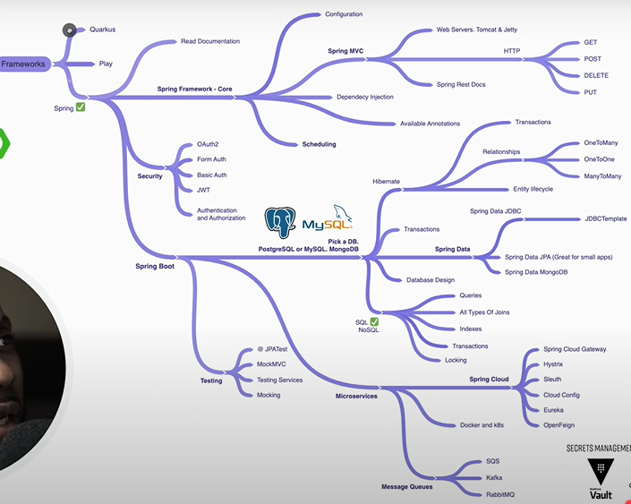
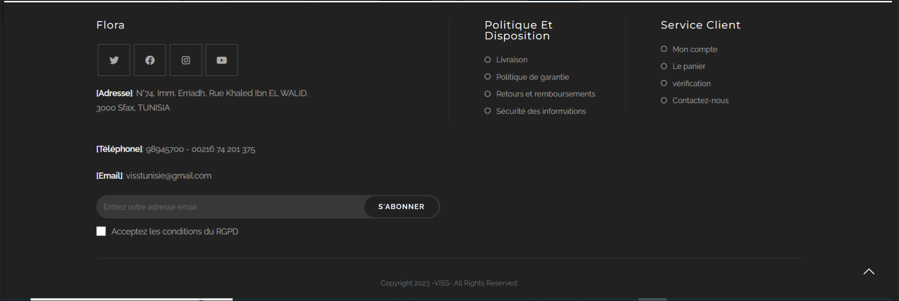
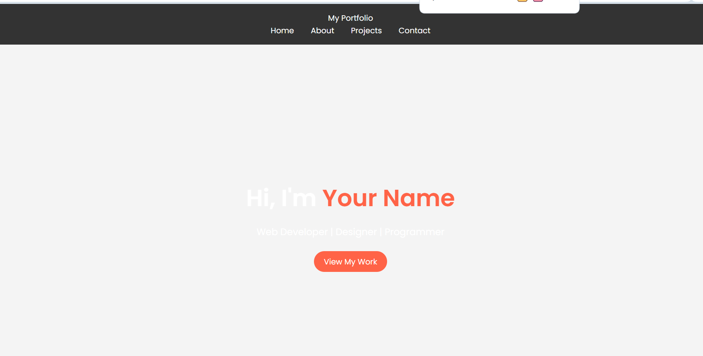
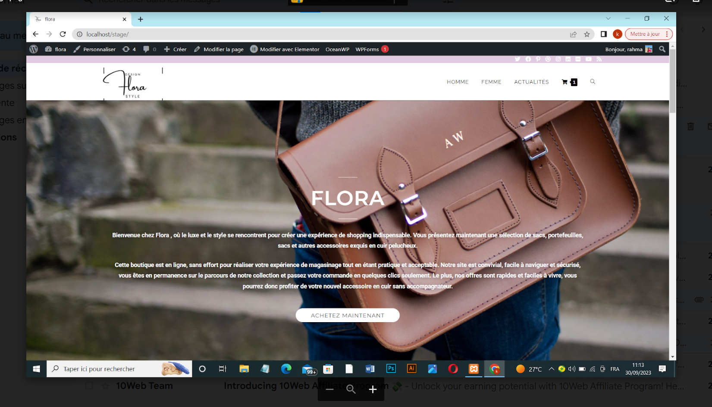

WordPress Project: Création d'un site web E-commerce
Introduction
Ce projet a été développé sur la plateforme WordPress pour [décrire le but du projet, par exemple : "créer un site web dynamique pour une entreprise de e-commerce. Le projet vise à [décrire les objectifs, comme l'amélioration de la visibilité en ligne].
Exemples de mon Travail




Fonctionnalités Clés
- Conception responsive et adaptable aux mobiles.
- Système de paiement sécurisé intégré.
- Optimisation SEO pour améliorer la visibilité.
- Plugins personnalisés pour ajouter des fonctionnalités.
- Support multilingue pour un public international.
Technologies Utilisées
Les technologies suivantes ont été employées dans ce projet :
- WordPress pour le CMS
- HTML5, CSS3, JavaScript pour le développement frontend
- PHP pour le développement backend
- MySQL pour la gestion de la base de données
- Plugins WordPress pour la fonctionnalité avancée